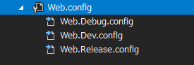

ビルド構成毎の Config 変換
社内試験環境と本番環境用にWeb.configを書き換えるために調べた。@Visual Studio 2017
ビルド構成毎の Config の作成
- Web.configを右クリックし、Config変換を追加を選択する。

ビルド構成毎にWeb.configが作成される。

ビルド構成毎に Config を書き換える
ビルド構成毎にWebServiceの参照先を変更したい場合があると思います。
ローカルでは http://hoge.co.jp 、配備先では http://fuga.co.jp としたい場合、configを下記のように設定します。
Web.config
<?xml version="1.0" encoding="utf-8"?>
<configuration>
<appSettings>
<add key="WebServiceUrl" value="http://hoge.co.jp"/>
</appSettings>
</configuration>
Web.Dev.Config
<?xml version="1.0" encoding="utf-8"?>
<configuration xmlns:xdt="http://schemas.microsoft.com/XML-Document-Transform">
<appSettings xdt:Transform="Replace">
<add key="WebServiceUrl" value="http://fuga.co.jp"/>
</appSettings>
</configuration>
実際に構成をDevに設定し、ビルドするとWeb.configが書き換えられます。
Web.config
<?xml version="1.0" encoding="utf-8"?>
<configuration>
<appSettings>
<add key="WebServiceUrl" value="http://fuga.co.jp"/>
</appSettings>
</configuration>